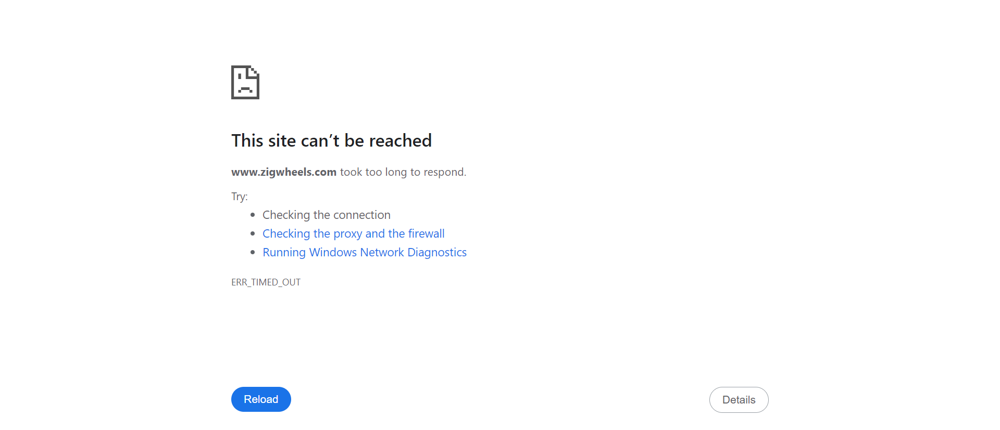

-
Honda bikes in zigwheels
11:30:35 am / 00:00:44:599 Fail
Honda bikes in zigwheels
04.04.2024 11:30:35 am 04.04.2024 11:31:19 am 00:00:44:599 · #test-id=1Failnew honda bikes under 4lakhsGiven The user navigates to zigwheels applicationWhen user clicks on upcoming bikesstepDefinitions.Hooks.addScreenshot(io.cucumber.java.Scenario)And user specifies the manufacturer as HondaStep skippedThen user recieves a list of bikes under 4 lakhsStep skipped -
popular used cars of chennai in zigwheels
11:31:19 am / 00:00:44:995 Fail
popular used cars of chennai in zigwheels
04.04.2024 11:31:19 am 04.04.2024 11:32:04 am 00:00:44:995 · #test-id=13Failused cars in chennaiGiven The user navigates to zigwheels applicationWhen user clicks on used carsstepDefinitions.Hooks.addScreenshot(io.cucumber.java.Scenario)used cars in chennaiAnd user specifies the city as chennaiStep skippedThen user recieves a list of popular used car models in chennaiStep skipped
-
org.openqa.selenium.NoSuchWindowException
1 tests
org.openqa.selenium.NoSuchWindowException
1 failedStatus Timestamp TestName Fail 11:31:18 am stepDefinitions.Hooks.addScreenshot(io.cucumber.java.Scenario) Honda bikes in zigwheels.new honda bikes under 4lakhs.stepDefinitions.Hooks.addScreenshot(io.cucumber.java.Scenario) -
org.openqa.selenium.json.JsonException
2 tests
org.openqa.selenium.json.JsonException
2 failedStatus Timestamp TestName Fail 11:31:11 am When user clicks on upcoming bikes Honda bikes in zigwheels.new honda bikes under 4lakhs.When user clicks on upcoming bikesFail 11:31:53 am When user clicks on used cars popular used cars of chennai in zigwheels.used cars in chennai.When user clicks on used cars
Started
Apr 4, 2024 11:30:34 am
Ended
Apr 4, 2024 11:32:04 am
Features Passed
0
Features Failed
2
Features
Scenarios
Steps
Timeline